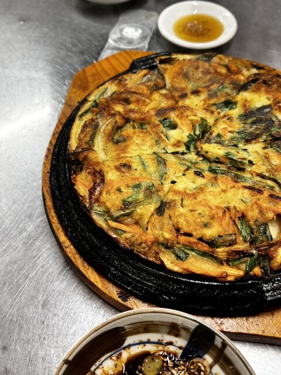
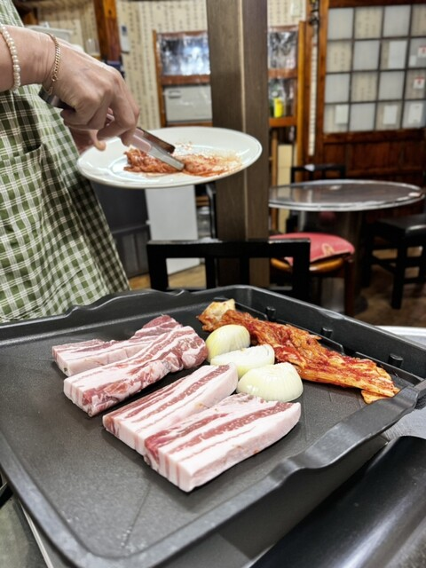
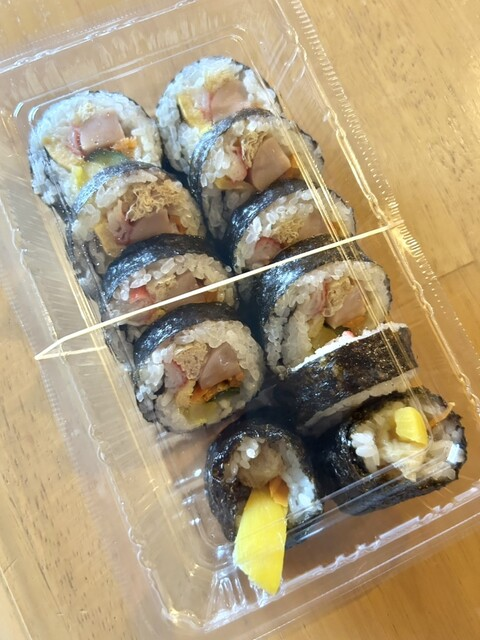
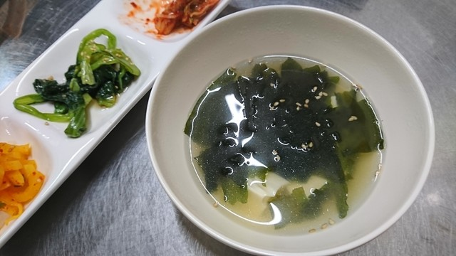

沼津・大手町
아리랑 식당 ・ 韓国家庭料理
交差点の角に、
本場の味あり。
沼津仲見世商店街のほど近く。昔ながらの韓国食堂で、鉄板のサムギョプサル、香ばしいチヂミ、ごはんが進むプルコギを。地元に長く愛されてきた、飾らない一軒です。
お品書きを見る沼津仲見世商店街のほど近く。昔ながらの韓国食堂で、鉄板のサムギョプサル、香ばしいチヂミ、ごはんが進むプルコギを。地元に長く愛されてきた、飾らない一軒です。
お品書きを見る「アリラン」は、韓国で最も親しまれる民謡の名。峠を越えた向こうに広がる、あたたかな故郷を唄ったものです。
その名のとおり、私たちが出すのは家庭のごはん。おふくろの手が作る、素朴で力強い韓国の味を、沼津・大手町で長く続けてきました。
黄色い壁の建物が目印。仕事帰りにふらりと、ご家族の夕食に、気の合う仲間と一杯に。どうぞ気取らずに。
チヂミもプルコギもナムルも、韓国のお母さんの味そのまま。
じゅうっと焼くサムギョプサル。テーブルの真ん中に会話が生まれる。
沼津駅南口から徒歩7分。ランチもディナーも普段づかいで。






ランチ 〜2,000円／ディナー 〜3,000円。写真は実際のお料理です。価格は季節により変わります、詳しくは店頭にて。

| 店名 | アリラン食堂（ありらん しょくどう） |
|---|---|
| ジャンル | 韓国料理・焼肉 |
| 住所 | 〒410-0801 静岡県沼津市大手町4-8-1 |
| 電話 | 055-951-5170 |
| 営業時間 | 月〜土 17:00〜23:00／ランチ 火〜木 11:30〜13:30 |
| 定休日 | 日曜・祝日 |
| アクセス | JR沼津駅 南口より徒歩約7分 |
| お支払い | 現金／PayPay |